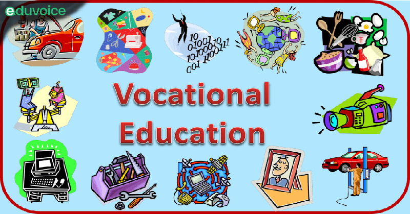

Vocational Courses
About Vocational Courses
Vocational courses are specialized programs focused on hands-on skills like tailoring, welding, electrical works, and IT skills to prepare students for specific trades.
Vocational Courses: Prepare for a Successful Career
Vocational courses are specialized programs designed to teach students the skills and knowledge needed for specific careers. These courses are ideal for individuals who want to start working soon after completing their education, offering practical experience and hands-on training.
Hospitality & Tourism
Vocational courses in hospitality and tourism are designed to train individuals for careers in the service and tourism industry. Students learn about hotel management, food and beverage services, and event planning. This field emphasizes customer service, organizational skills, and team coordination. Graduates can work in hotels, resorts, or travel agencies, providing essential services to tourists. The growing global tourism industry ensures there is a constant demand for professionals in this sector.
Healthcare & Medical Assistant
Healthcare vocational courses provide students with the foundational knowledge and skills to assist in medical settings. The curriculum includes medical terminology, patient care, and medical office administration. Students can pursue roles as medical assistants, lab technicians, or healthcare administrators. This field offers a variety of job opportunities in hospitals, clinics, and private practices. Healthcare professionals are in high demand due to the growing healthcare needs of an aging population.
Information Technology (IT)
Vocational courses in IT focus on teaching students practical tech skills such as computer programming, network management, and cybersecurity. These courses prepare individuals for jobs as software developers, system administrators, or IT support specialists. The IT field is rapidly growing, offering lucrative career opportunities across various industries. With the increasing reliance on technology, skilled IT professionals are essential in maintaining systems and ensuring security. The tech industry also offers excellent job stability and opportunities for growth.
Automobile Technology
Vocational courses in automobile technology teach students how to repair, maintain, and service vehicles. The curriculum covers engine diagnostics, mechanical repairs, electrical systems, and automotive electronics. Students can become automotive technicians, working in repair shops, dealerships, or car manufacturers. As the automotive industry continues to evolve with new technologies, there is a need for skilled professionals who can adapt to these changes. The course offers practical experience, ensuring graduates are job-ready in a fast-paced industry.
Fashion Design
Fashion design courses equip students with the skills to create and design clothing, accessories, and textiles. The curriculum includes pattern making, fabric selection, sewing techniques, and fashion illustration. Graduates can work in design houses, retail fashion, or even start their own brands. The fashion industry is fast-paced and creative, offering a variety of opportunities for those passionate about design. With trends constantly changing, there is always room for innovative designers to make their mark in the fashion world.
Culinary Arts
Culinary arts courses prepare students to work in the food industry, with a focus on cooking techniques, food safety, and kitchen management. Students learn to prepare different types of cuisine, from baking to gourmet dishes, and gain experience in both large-scale kitchens and small establishments. Graduates can become chefs, pastry chefs, or restaurant managers. Culinary arts is an exciting and rewarding field, where creativity and passion for food are key. The industry offers a wide range of career opportunities in restaurants, hotels, and catering businesses.
Construction & Civil Engineering
Vocational courses in construction and civil engineering teach students how to build, design, and maintain infrastructure. The courses cover construction methods, materials, site management, and safety protocols. Graduates can work as construction workers, site managers, or civil engineering assistants. The construction industry is essential for developing roads, bridges, and buildings, offering a steady stream of job opportunities. This field also offers potential for career advancement, with the option to specialize in areas like structural engineering or project management.
How to Achieve Your Goals
- Research recognized vocational training institutes.
- Enroll in certification programs in your chosen field.
- Practice skills consistently to master the trade.
Future Jobs and Opportunities
- Electrician, Plumber, Mechanic.
- IT Support Specialist, Graphic Designer.
- Self-employment opportunities in trades.